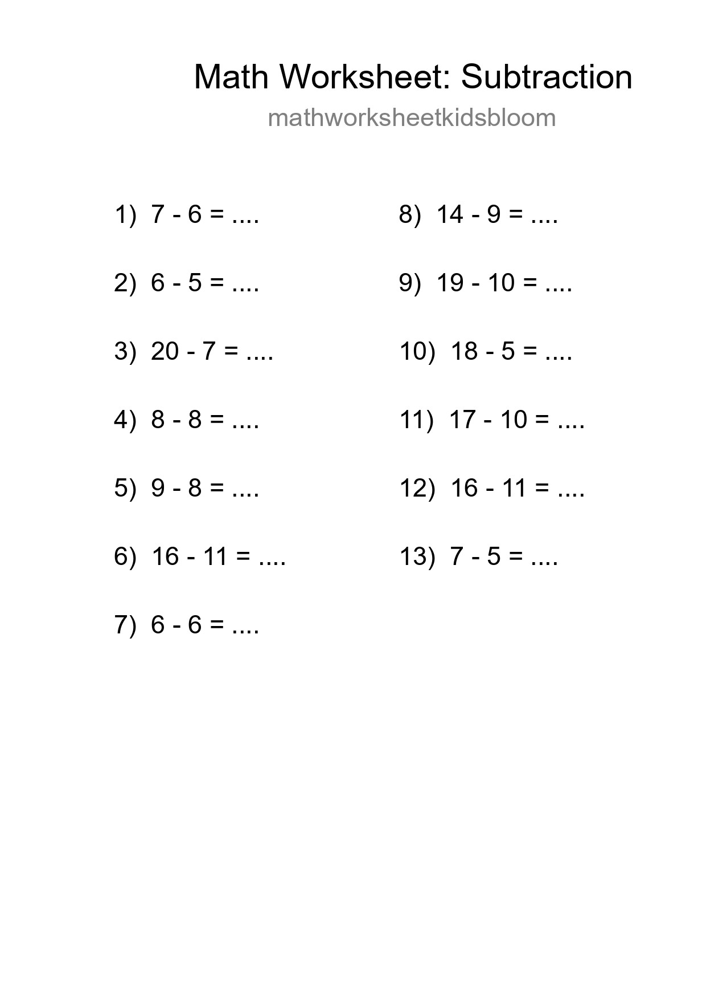
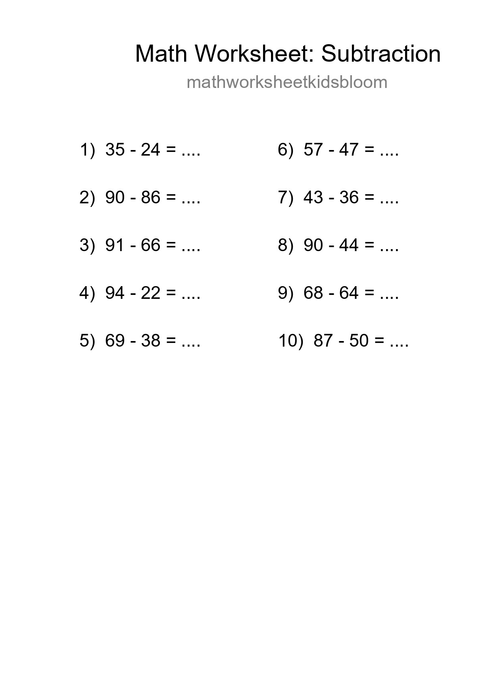
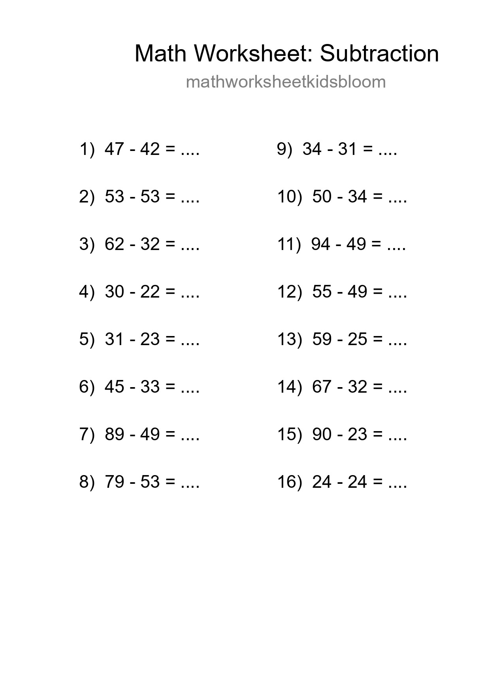
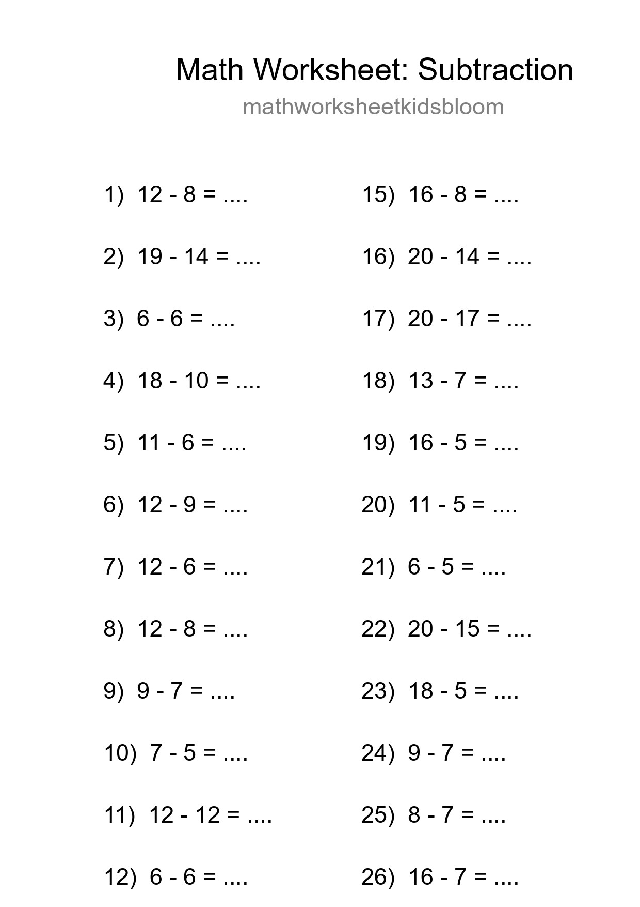
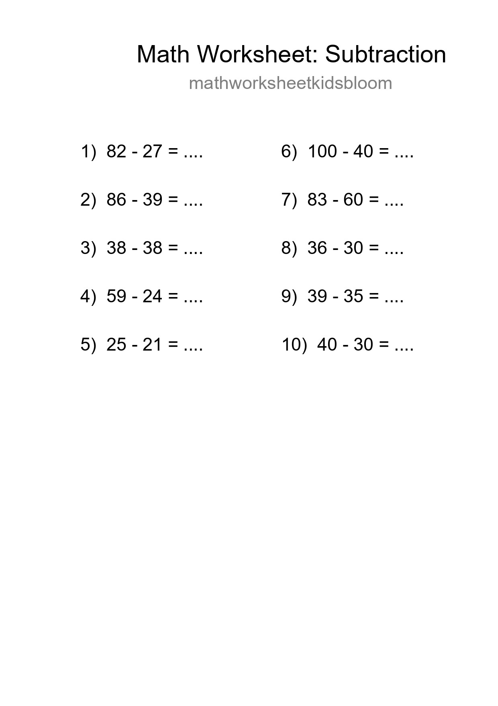
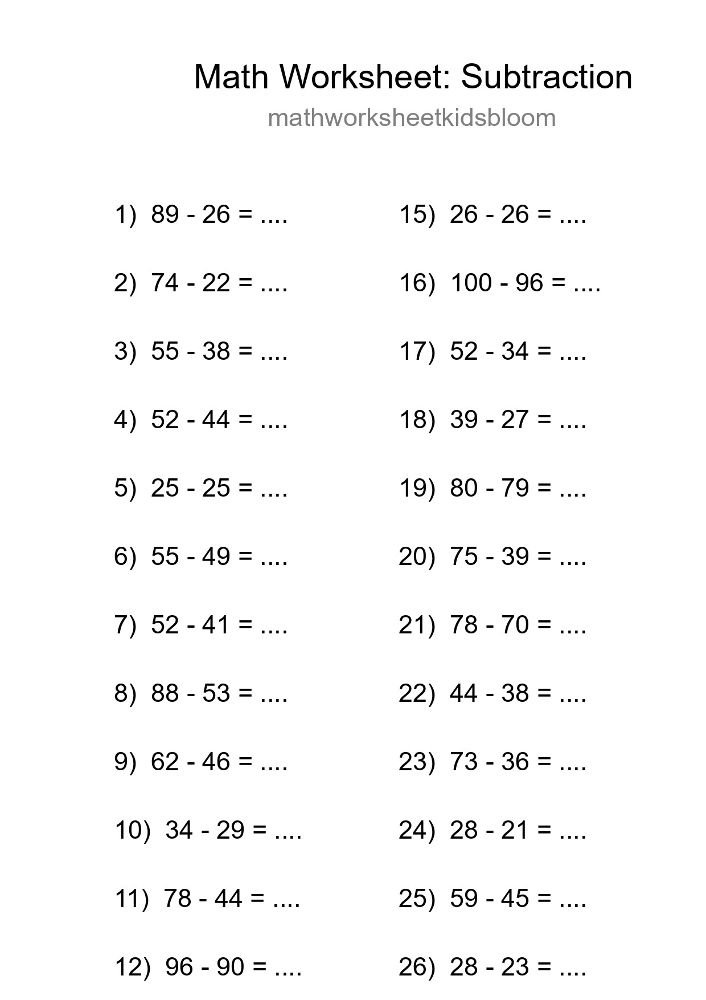
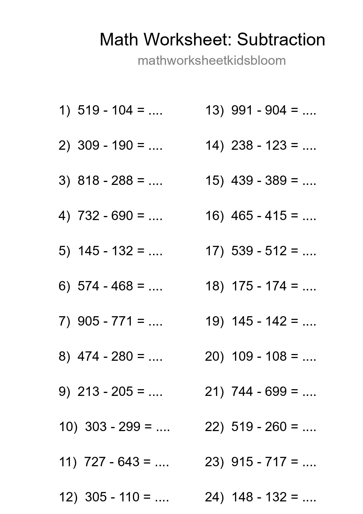
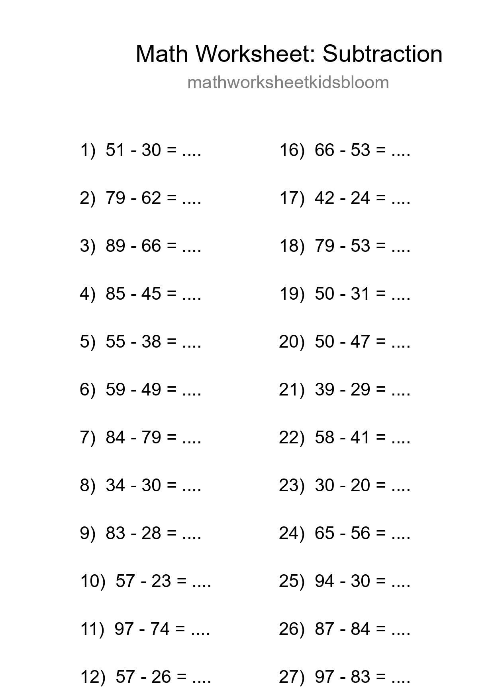

Printable Free 13 Subtraction Math Worksheet For Grade 2 - Part 9

Free 10 Subtraction Math Worksheet For Grade 3 - Part 21

Free 16 Subtraction Math Worksheet For Grade 3 With Answers - Part 33

Free 27 Subtraction Math Worksheet For Grade 2 With Answers - Part 45

Printable Free 22 Subtraction Math Worksheet For Grade 3 - Part 57

Free 30 Subtraction Math Worksheet For Grade 2 With Answers - Part 69

Free 13 Subtraction Math Worksheet For Grade 2 - Part 81

Free 25 Subtraction Math Worksheet For Grade 5 - Part 93

Free 10 Subtraction Math Worksheet For Grade 3 With Answers - Part 105

Free 28 Subtraction Math Worksheet For Grade 3 With Answers - Part 117

Free 24 Subtraction Math Worksheet For Grade 5 With Answers - Part 129

Grade 3 Subtraction Practice Worksheet (30 Problems) - Part 141

Grade 3 Subtraction Practice Worksheet (14 Problems) - Part 153

Printable Free 18 Subtraction Math Worksheet For Grade 3 - Part 165

Free 21 Subtraction Math Worksheet For Grade 3 With Answers - Part 177